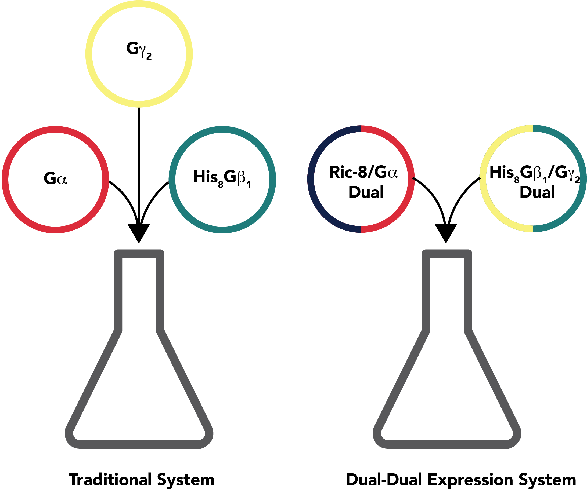

Research
Current Projects
The Dual-Dual Expression System
Work affiliated with University of Michigan, Department of Pharmacology, Tall Lab

My current work focuses on improving methods of purifying G proteins. G proteins couple to the eponymous G protein coupled receptors (GPCRs), which mediate a broad variety of physiologically relevant pathways including those for sight, olfaction, blood sugar levels, neural signaling, and cell growth.
G proteins are heterotrimeric, with alpha, beta, and gamma subunits. They are also post-translationally modified, and as bacteria lack the necessary machinery for post-translational modifications, insect cell-based systems are generally preferred. Historically, purification of heterotrimers or the active alpha subunit involves creating three recombinant baculoviruses – one for each subunit.
The alpha subunit is folded by Ric-8, a chaperone protein. By using the bicistronic pFastBac Dual vector, we created two recombinant baculoviruses – one encoding a his-tagged beta subunit and a gamma subunit, and the other encoding an alpha subunit and Ric-8. This allows us to improve protein expression levels and use standard Ni-NTA chromatography to purify G proteins in unprecedented amounts.
Affiliated Publications and Presentations
GPCR Retreat, Bromont, Canada, September 27, 2019. Poster, A Dual-Dual Expression System for Purification of G Protein Alpha Subunits and Heterotrimers.
Pharmacology SURF Symposium, Ann Arbor, MI, August 8, 2019. Oral Presentation, A Dual-Dual Expression System for Purification of G Protein Alpha Subunits and Heterotrimers.
Previous Projects
In vitro phosphorylation of Ric-8A
Work affiliated with University of Michigan, Department of Pharmacology, Tall Lab
From October 2017 to April 2018 and September 2018 to January 2019, I assisted with work focused on using an in vitro kinase reaction to phosphorylate recombinantly purified Ric-8 proteins. Ric-8 proteins are regulated by several C-terminal phosphosites, especially Ser435 and Ser440. Thus, with the goal of purifying large quantities of protein suitable for structural studies, we purified Ric-8A (one particular isoform) out of E. coli. By incubating the protein in a buffer with protein kinase CK2 and ATP, we were able to successfully phosphorylate the protein. This permitted its crystallization (McClelland et al., 2020). Similar methods were used in a study using cryo-EM (Seven et al, 2020).
The figure is of a cryo-EM structure, PDB 6VU8. Galphai is in red, Ric-8A is in navy, and pSer435 and pThr440 are in teal.
Affiliated Publications and Presentations
UROP Symposium, Ann Arbor, MI, April 18, 2018. Poster, Protein Kinase CK2 Phosphorylation of Ric-8A Potentiated its Enzymatic Activities Towards G protein Alpha Subunits and Permitted its Crystallization.
Computational analysis of aldolase with naphthalene diyl-2,6-bisphosphate inhibitors
Work affiliated with University of Texas at Austin, Department of Biomedical Engineering, Ren Lab through the BME CURes Cancer REU
From June 2018 to August 2018, I explored computational biology. I learned how to run molecular dynamics simulations using Tinker and the AMOEBA polarizable force field. I also wrote python scripts to analyze several simulations which computed the binding free energy of aldolase A in complex with several proposed inhibitors.
Solid tumors often grow at a rate exceeding that of angiogenesis, and thus end up in hypoxic conditions. Hypoxia results in activation of hypoxia-inducible transcription factor 1, or HIF-1. HIF-1 upregulates a variety of genes that keep the cell alive and stimulate angiogenesis. One of the pathways that is upregulated is the glycolytic pathway. Previous studies showed that it is possible to feedback regulate HIF-1 by regulating glycolysis, so this study aimed to explore potential inhibitors of aldolase A.
The figure is of one subunit of aldolase A (in navy) in complex with naphthalene diyl-2,6-bisphosphate (in red), an inhibitor we used as a scaffold for our analysis.
Affiliated Publications and Presentations
Summer Scholars Symposium, Austin, TX, August 2, 2018. Poster, Computational studies of novel inhibitors of aldolase A via molecular dynamic simulations.